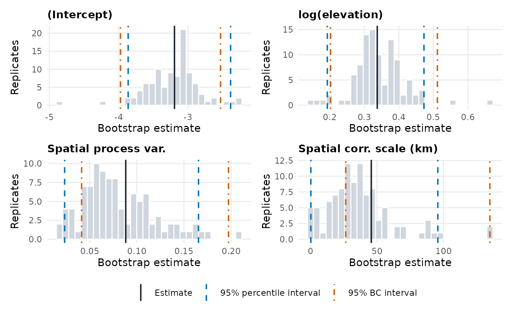

Simulates datasets from a model fitted with glgpm() at its estimated
parameters, refits the model to each, and summarises the sampling
distribution of the estimates with standard errors, bias and two kinds of
bootstrap confidence interval.
Usage
parametric_bootstrap(
object,
n_sim = 1000,
seed = NULL,
level = 0.95,
cores = 1,
messages = getOption("RiskMap.messages", TRUE)
)Arguments
- object
A fitted
RiskMapobject returned byglgpm(), from a Gaussian, binomial, Poisson or negative binomial model, with or without a nugget andre()terms.- n_sim
Number of bootstrap replicates. Percentile intervals at the 95% level need about 1000 for stable limits.
- seed
Optional non-negative integer that makes the bootstrap reproducible. When
NULL(the default), one integer is drawn from the session's random number generator, soset.seed()before the call also reproduces it. The seed used is returned insettings. The caller's random number state is otherwise left unchanged.- level
Probability covered by the intervals.
- cores
Number of processes. With more than one, the replicates run in parallel by forking, which is not available on Windows, where they run one after another.
- messages
Logical, whether to report on the bootstrap, with a progress bar as described in riskmap_progress. Defaults to the option
RiskMap.messages, orTRUEif it is not set.
Value
An object of class RiskMap_bootstrap, a list with
- estimates
A matrix of the bootstrap estimates on their natural scale, with one row per replicate (
NAfor failed refits) and one column per parameter, named asunlist(coef(object)).- estimate
The estimate of
object, on the same scale.- labels
Readable names of the parameters.
- failures
A data frame with the
replicate,seedand errormessageof each failed refit.- warnings
A data frame with the
replicate,seedandmessageof each warning from the refits.- settings
A list with
n_sim,seed,level,cores, theseed_spacingbetween replicates, thefamilyand thedistance_unitsof the model, and theelapsed_seconds.
Details
Each replicate simulates a response at the original locations, with the
original covariates, denominators, offsets and random-effect groups, from
the fitted model (see simulate_glgpm()), and refits the model to it by
glgpm(), starting from the estimate, without the final conditional
samples and quietly. The refits reuse the design matrix, the locations
and the settings of control_mcml stored in the fit, so the model
formula and the data are not evaluated again.
Replicate \(i\) uses one seed, \(s_i = s + 10000 (i - 1)\), where
\(s\) is seed. It simulates its data with simulate_glgpm(seed = \(s_i\))
and refits with glgpm(seed = \(s_i\)). The Monte Carlo streams of a
binomial, Poisson or negative binomial fit are derived from its seed by offsets between 1 and
about 6000, so consecutive integers would make replicates share streams,
and seeds 10000 apart do not. A replicate depends only on its seed, so the
results are identical for any number of cores and the first replicates
of a larger bootstrap are those of a smaller one. Each replicate runs with
one BLAS and OpenMP thread when the RhpcBLASctl package is installed, and
the user's thread settings are restored afterwards.
A refit that fails is recorded in failures with its error message, and
its estimates are NA. Warnings from the refits, for example about
variances estimated at zero, are recorded in warnings.
summary() reports, for each parameter, the estimate, the median of the
bootstrap estimates, the bias (their mean minus the estimate), their
standard deviation as the standard error, the proportion below the
estimate, and two intervals. The percentile interval takes the quantiles
of the bootstrap estimates at \(\alpha/2\) and \(1 - \alpha/2\), where
\(\alpha = 1 -\) level. The bias-corrected (BC) interval takes them at
\(\Phi(2 z_0 + z_{\alpha/2})\) and \(\Phi(2 z_0 + z_{1 - \alpha/2})\),
where \(z_0 = \Phi^{-1}(p)\) and \(p\) is the proportion of bootstrap
estimates below the estimate (Efron and Tibshirani, 1993, Chapter 14).
The BC interval is not available when \(p\) is 0 or 1.
The difference matters for the spatial variance \(\sigma^2\) and the scale \(\phi\). Their maximum likelihood estimators are biased downward, so most bootstrap estimates fall below the estimate, just as the estimate tends to fall below the true value. The percentile interval then shifts downward, the wrong way, because it reproduces the bias of the estimator instead of correcting it. With \(p > 0.5\), \(z_0 > 0\) and the BC interval moves both limits upward. Both intervals are unchanged by monotone transformations, so they are the same whether computed for \(\phi\) or \(\log \phi\).
References
Efron, B. and Tibshirani, R. J. (1993). An Introduction to the Bootstrap. Chapman & Hall, New York.
Examples
data(italy_sim)
fit <- glgpm(y ~ gp(), data = italy_sim[1:50, ], family = "gaussian",
messages = FALSE)
bootstrap <- parametric_bootstrap(fit, n_sim = 20, seed = 1,
messages = FALSE)
bootstrap
#> ── Parametric bootstrap ────────────────────────────────────────────────────────
#> Linear geostatistical model, 20 replicates (seed 1). Variances and the scale
#> are on their natural scale.
#>
#> Bootstrap distribution
#> Parameter Estimate Median Bias Std. error Below
#> (Intercept) 9.986 9.994 0.02918 0.658 0.45
#> Spatial process var. 2.554 1.741 -0.7039 1.32 0.75
#> Spatial corr. scale (km) 44.47 8.226 4.552 84.27 0.70
#> Measurement error var. 0.2188 0.234 0.01184 0.05112 0.35
#> ℹ Bias is the mean of the bootstrap estimates minus the estimate, and Below the
#> proportion of them below the estimate.
#>
#> 95% intervals, percentile and bias-corrected (BC)
#> Parameter Percentile lower Percentile upper BC lower BC upper
#> (Intercept) 8.986 11.31 8.903 11.06
#> Spatial process var. 0.2634 4.69 0.9904 5.058
#> Spatial corr. scale (km) 2.732 272.2 2.94 341.4
#> Measurement error var. 0.1599 0.3199 0.159 0.2935
# \donttest{
data(liberia)
liberia <- sf::st_as_sf(liberia, coords = c("long", "lat"), crs = 4326)
fit <- glgpm(npos ~ log(elevation) + gp(), denominator = ntest,
data = liberia, model_crs = 32629, family = "binomial",
seed = 2026)
#> ℹ The model is fitted in EPSG:32629, with distances in km.
#> ✔ Certified. The Monte Carlo error of the estimate is within 0.0091 statistical
#> standard errors (an approximate 95% bound, tolerance 0.1).
bootstrap <- parametric_bootstrap(fit, n_sim = 100, seed = 2026)
#> ℹ Simulating and refitting 100 replicates.
#> ✔ Done in 3 minutes. 100 of 100 refits succeeded.
summary(bootstrap)
#> ── Parametric bootstrap ────────────────────────────────────────────────────────
#> Binomial geostatistical model, 100 replicates (seed 2026). Variances and the
#> scale are on their natural scale.
#>
#> Bootstrap distribution
#> Parameter Estimate Median Bias Std. error Below
#> (Intercept) -3.196 -3.164 -0.01584 0.379 0.47
#> log(elevation) 0.3375 0.3317 0.003452 0.07406 0.54
#> Spatial process var. 0.08825 0.07013 -0.007931 0.03844 0.65
#> Spatial corr. scale (km) 45.67 34.06 -8.778 25.36 0.78
#> ℹ Bias is the mean of the bootstrap estimates minus the estimate, and Below the
#> proportion of them below the estimate.
#>
#> 95% intervals, percentile and bias-corrected (BC)
#> Parameter Percentile lower Percentile upper BC lower BC upper
#> (Intercept) -3.864 -2.386 -3.975 -2.531
#> log(elevation) 0.1929 0.4728 0.2024 0.5116
#> Spatial process var. 0.02343 0.1654 0.04143 0.1972
#> Spatial corr. scale (km) 0.2235 95.72 26.44 134.9
plot(bootstrap)

# }